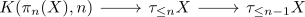
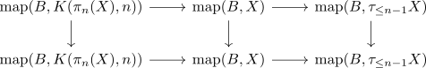

R-local simple anima a subring of Q and homotopy groups as R-module
Proposition
Let $X$ be a simple connected anima and $R\subseteq \mathbb{Q}$ a subring. Assume that $\pi_*(X)$ is an \(R\)-module.
Then $X$ is a
Proof
Consider
\begin{align*}
X = \mathrm{lim}_{n \rightarrow \infty} \tau_{\leq n}X
\end{align*}
so it R-local anima closed under limits
induction basis
Then $X =
induction step
consider the fiber sequence

where the LHS is R-local by <> &
So consider
